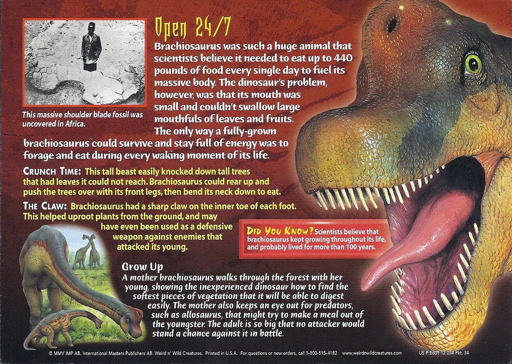

In a hypothetical battle between a Brachiosaurus and a Pterodactyl, the odds would strongly favor the Brachiosaurus. This is primarily due to the vast difference in size and physical attributes between the two prehistoric creatures.
The Brachiosaurus was one of the largest land animals to have ever existed, with an immense body and long neck that allowed it to reach vegetation high in the trees. Its sheer size alone would be a formidable defense against the relatively smaller Pterodactyl, which was a flying reptile. The Brachiosaurus's powerful legs and massive tail could be used for defense, and simply its presence would likely deter the Pterodactyl from attempting any confrontation. While the Pterodactyl had the advantage of flight, it would be no match for the Brachiosaurus's size, strength, and ability to defend itself on the ground.
